Profesionální 4K záběry z dronu a HDR fotografie. Používám
DJI Mini 4 Pro.
TomášStrejček
Jsem certifikovaný pilot dronů, kameraman a fotograf z Prahy. Mojí specializací jsou drony; natáčím jak s DJI cinematic, tak s FPV a létám od svých 16 let.
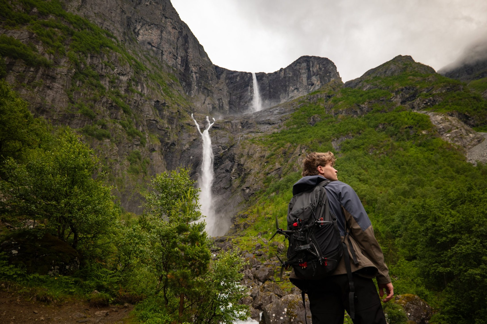
Služby
Rychlé, dynamické záběry s filmovým FPV dronem. Používám
iFlight Cine LR7.
Ze země
Pozemní natáčení nebo focení s full frame fotoaparátem
Lumix S5D.
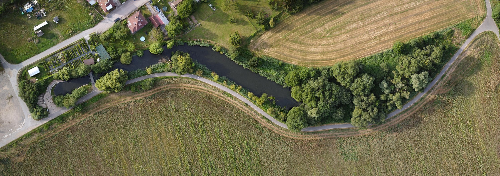
Detailní letecká fotogrammetrie nemovitostí ve vysokém rozlišení
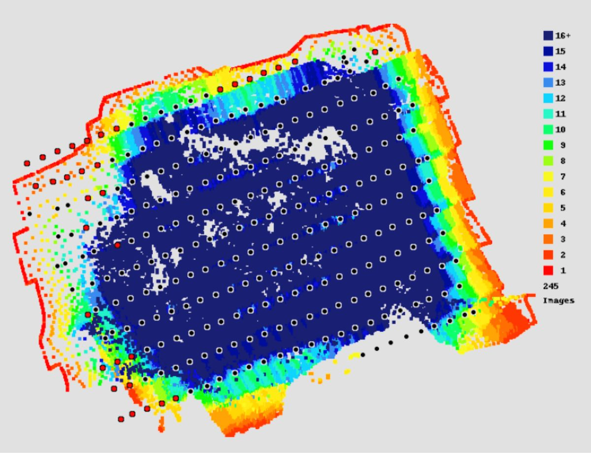
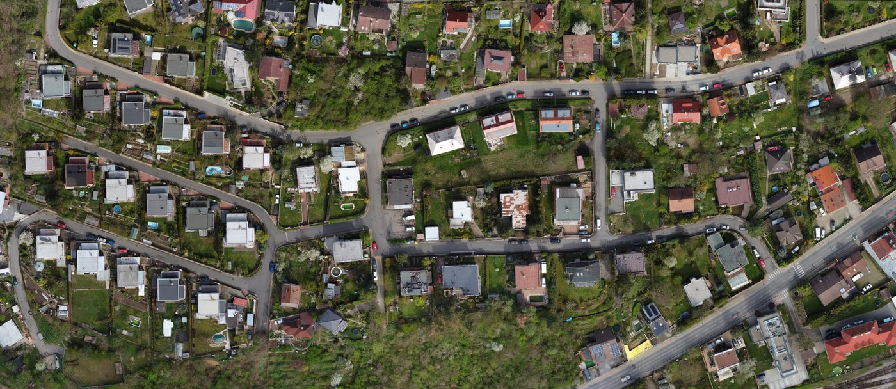
Portfolio
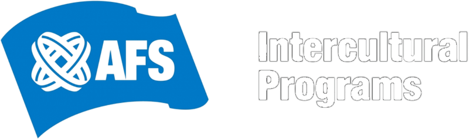
Byl jsem najat jako fotograf a kameraman pro skupinu mezinárodních studentů z Hongkongu. V Česku se účastnili vzdělávacího programu a já je týden doprovázel s kamerou.
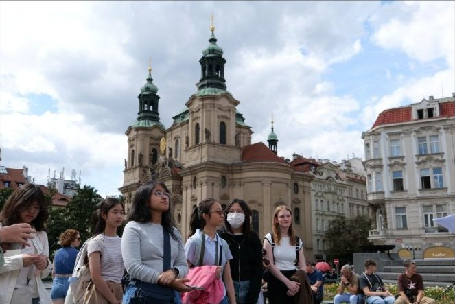
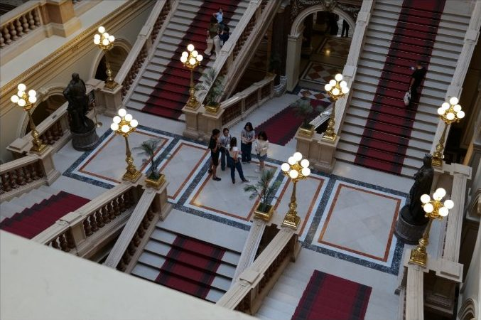
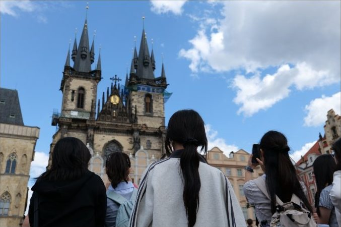
Během kampaně před komunálními volbami 2026 jsem tvořil obsah pro místní stranu.
Záběry nemovitostí pro místní stavební firmu.
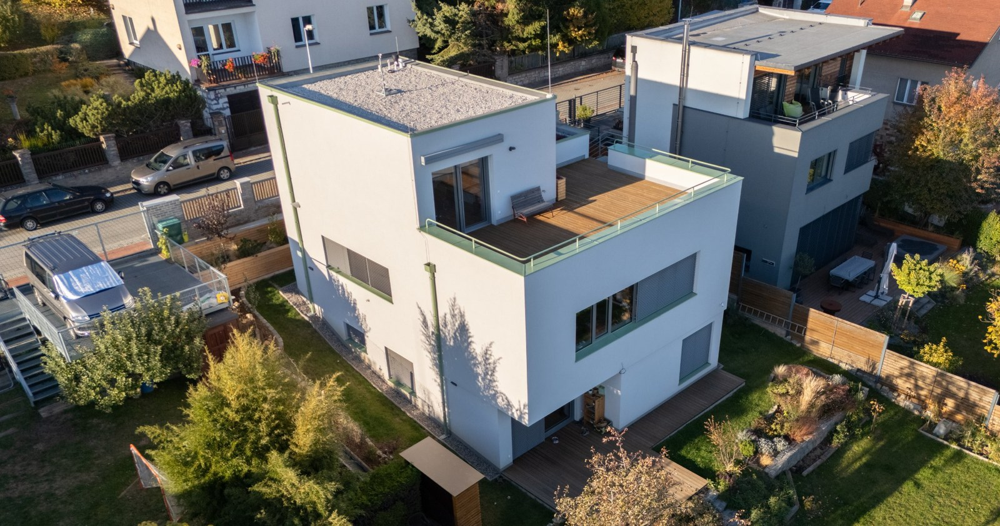
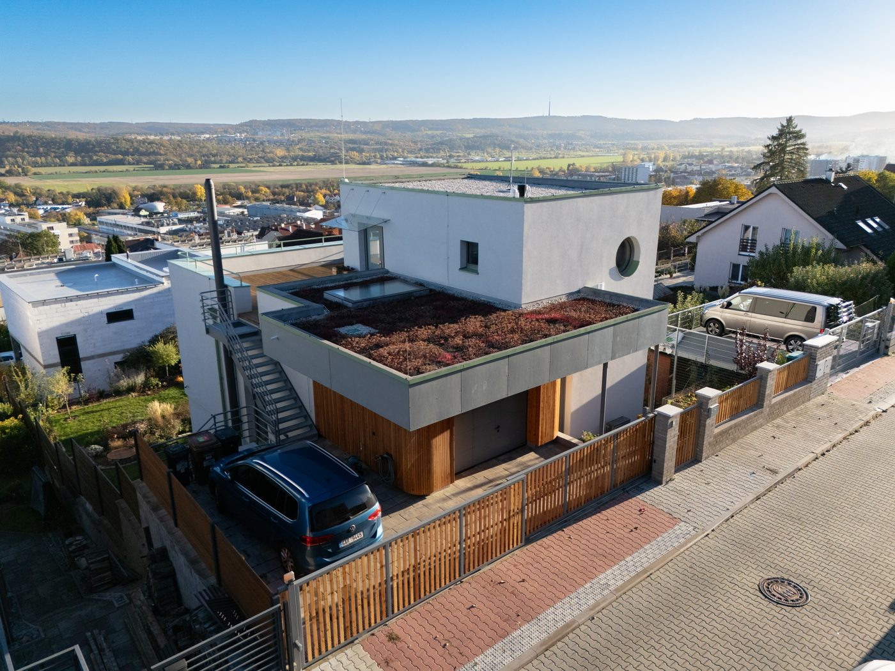
V rámci studia jsem prováděl výzkum mangrovového ostrova v Panamě pomocí letecké fotogrammetrie.
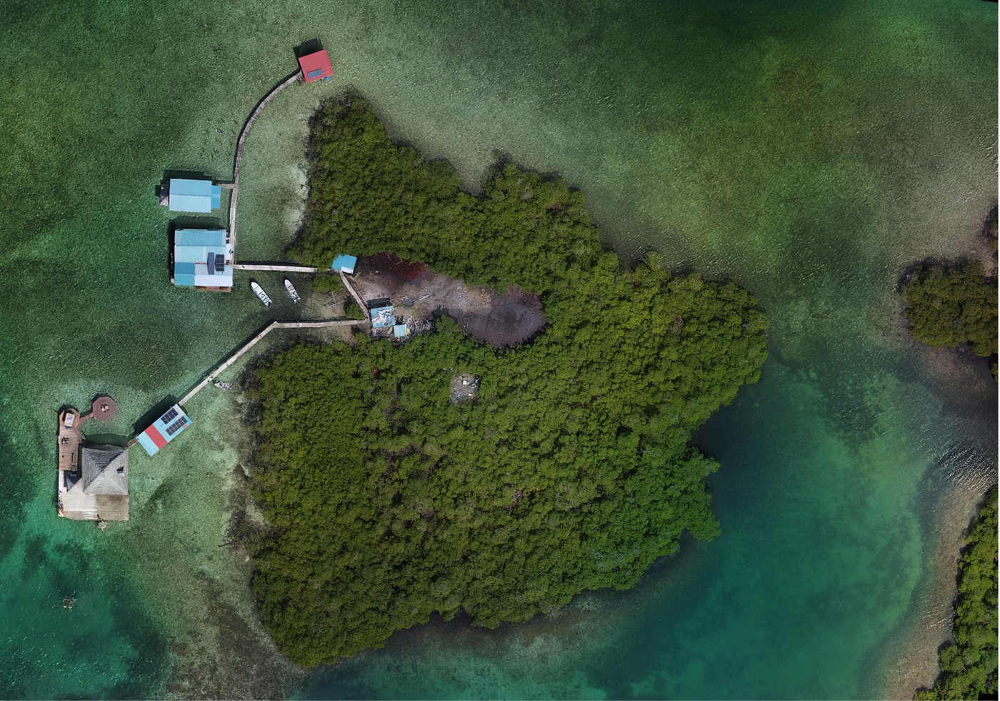
Ceník
Fotografie a videa nemovitostí z dronuod 3 500 Kč
Fotogrammetrická mapa pozemkuod 7 000 Kč
Pokud rozsah projektu přesáhne standardní cenu, platí pevné sazby:
Práce na místě1 000 Kč/h
Základní postprodukce500 Kč/h
Doprava z Prahy 1610 Kč/km
Ukázkový projekt v Sedlčanech:
Práce na místě (konzultace, prohlídka místa, natáčení)2 h2 000 Kč
Postprodukce1 h1 000 Kč
Vzdálenost z Prahy 16 a zpět38 km760 Kč
Celková cena3 760 Kč
Technika
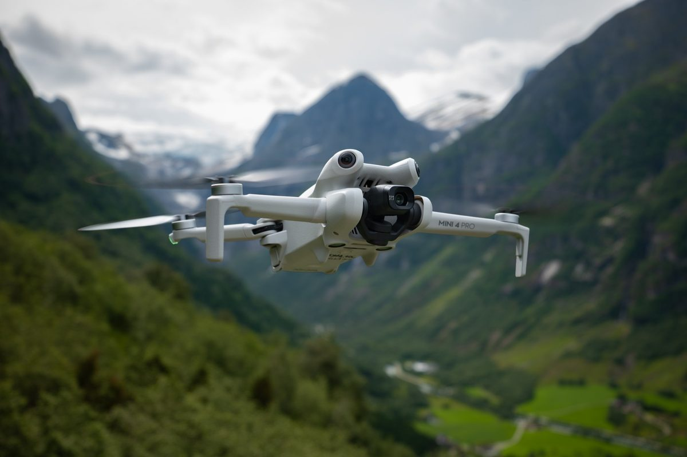
DJI Mini 4 Pro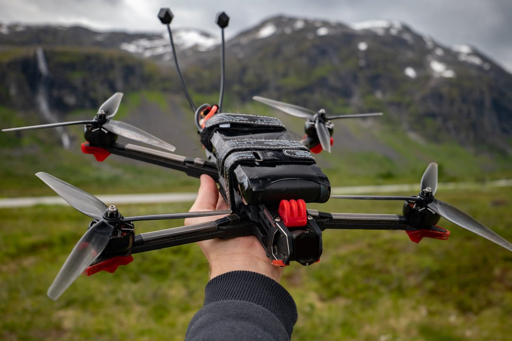
iFlight Cine LR 7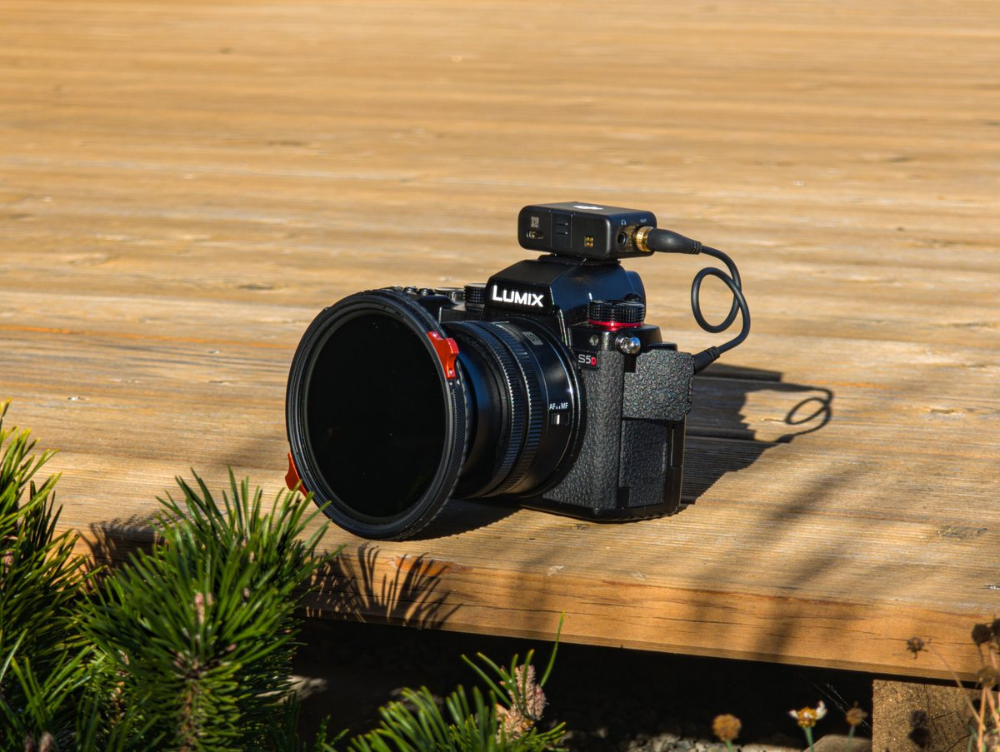
Lumix DC-S5D